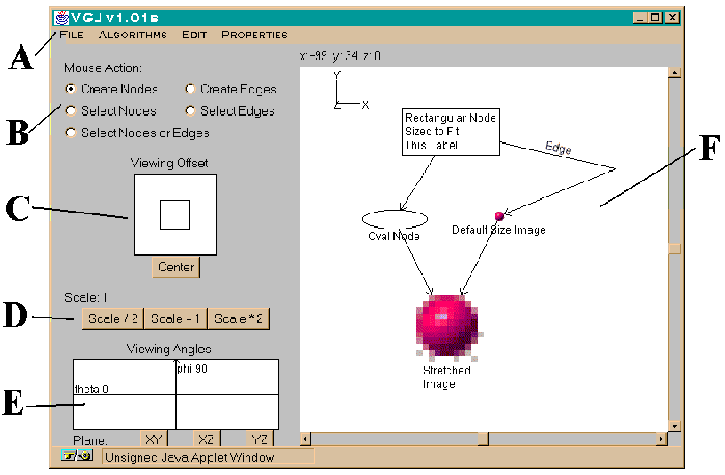
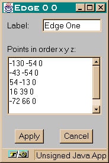
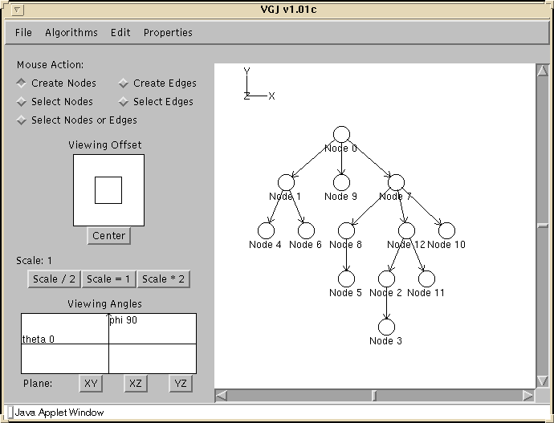

Visualizing Graphs with Java
(VGJ)
CONTENTS
Visualizing Graphs with Java (VGJ) is a tool for graph drawing and graph layout. Graphs can be input into VGJ in two ways: loading a textual description in GML (graph modeling language) or drawing a graph using the graph editor. The user can then select an algorithm which will layout the graph in an organized and (hopefully) aesthetically pleasing way.
VGJ has two major components: the graph editor and the layout algorithms. A full-featured graphical user interface is provided. The graph editor contains the typical features of tools that support graph drawing. Layout algorithms are being developed and implemented to layout different categories of graphs such as trees, planar graphs, directed and undirected graphs, and series-parallel graphs. For the directed graphs, the drawing method uses a unique graph-grammar decomposition to identify intrinsic substructures (clans) in the graph. The method provides for a two-dimensional analysis of the graph while the typical approach to drawing digraphs uses the single dimension, level, to arrange the nodes.
Corresponding to every visual graph is a textual representation in GML. GML was developed by Michael Himsolt at the University of Passau and is an attempt to standardize graph input formats. GML facilitates the attachment of arbitrary information to graphs, nodes, and edges. The user can also convert the VGJ drawn graph to PostScript format. This format can then be printed or saved into a user's local file and used as desired.
This document has five major sections:
In VGJ Basics, a long method for accomplishing a task is first shown. This method is more intuitive and can be accomplished with a single-button mouse, but there are quicker methods. Shorter methods will be described following the first method. The following symbols are used for quick reference.
* Indicates a short cut using the right mouse button.
** Indicates a short cut using the middle mouse button.
*** Indicates a key short cut.
VGJ may be distributed under the terms of the GNU General Public License, Version 2.
This graph drawing project is currently not funded. If you like what we're doing or if you want to use it commercially, please help support the graduate students working on the project. You may hire us to customize the tool to your needs.
The easiest way to run VGJ is to use a Java enabled web browser such as Netscape or Internet Explorer.
www.eng.auburn.edu/department/cse/research/graph_drawing/graph_drawing.html
Start a Graph Window
Your web browser may prohibit file operations, in which case you must run the program as an application and not an applet for file i/o to work.
To run VGJ as an application you must first install VGJ (see next section.) VGJ was developed using Sun's Java Development Kit. If you are using the same, perform the following steps to run VGJ as an application:cd graph_drawing
java EDU.auburn.VJG.VGJ
If you are not using JDK, consult your documentation to determine how to run an application.
When VGJ is run as an application, the first window loaded will contain two buttons. Start a Graph Window will load the graph editor just like the button on the web page. Exit will close the VGJ application.
1. Download the software
VGJ is available in two different compressed file formats:
VGJ.tar (larger) is available for Unix systems without unzip.
VGJ.zip (smaller).
Both files contain the whole project (sources, classes, documentation.)
2. Uncompress the files
For VGJ.tar, at a command prompt, type
tar xf VGJ.tar
For VGJ.zip, you must use PKZip for Windows, unzip for UNIX, or similar software that supports long file names and can decompress the file. If PKZip for Windows is installed, you can double-click on the file to decompress it.
Both files when decompressed correctly will create a directory called graph_drawing. All needed files will be placed in this directory.
VGJ Basics
The following figure shows the VGJ main window.

To create a graph in VGJ, you must first create nodes and then create edges to connect them.
By default, a node's label is its assigned number in the graph. This can be changed by editing a node's attributes, or by changing a global setting, as explained in later sections.
** The middle button of a three-button mouse can be used without modifying the selection in the Mouse Action area.
*** A second alternative is:
Again, it does not matter what is selected in Mouse Action.
By default, VGJ draws edges for a directed graph and the order in which nodes are clicked determines the direction of the edge. To make an edge bi-directional, draw two edges between the nodes: one from A to B and one from B to A.
A graph can be made non-directional by unselecting Directed on the Properties menu.
Self edges are allowed. They can be created by making the same node be the start and end of the edge. Self edges are initialized with a small triangular path above the node.
An existing graph can be manipulated in several ways: nodes can be moved to new positions, nodes and edges can be deleted, nodes can be resized, the attributes of nodes and edges can be modified, and graph properties can be set.
The bottom bar sizes the node vertically.
The left bar sizes the node horizontally.
The upper right bar sizes the node in both directions proportionally.
* The right mouse button can be used without modifying the selection in the Mouse Action area.
Select Nodes - all nodes inside the box will be selected
Select Edges - all edges inside the box will be selected
Select Nodes and Edges - everything in the box will be selected
* Again, the same functionality is available by using the right mouse button, and it does not matter what Mouse Action is selected. Using this option will select both edges and nodes.
*** Groups of nodes and edges may also be selected one at a time by holding down the Shift key while selecting.
* The right mouse button may also be used in conjunction with the Shift key regardless of what Mouse Action is selected. This method can also be used to add objects to an existing selection of objects.
All objects in the graph may be selected by choosing Select All from the Edit menu.
When multiple nodes are selected, moving or sizing one of the selected nodes will apply the same transformations to all selected nodes.
Deleting a node will also delete any edges associated with that node.
* Double-clicking with the right mouse button will also bring up the attribute dialog box regardless of what Mouse Action is selected.

Attributes:
* Double-clicking with the right mouse button will also bring up the attribute dialog box regardless of what Mouse Action is selected.

Attributes:
There are several properties that can be set that affect the entire graph. The following four properties can be set by clicking on the appropriate choice in the Properties menu and only have two values. Selecting a property once will set the property to the second value. Selecting it again will return it to the original.
VGJ stores graphs in a text file using GML format. This text can be edited in VGJ by choosing Edit Text Representation from the edit menu. Files can be saved by using the Save and Save As choices in the File menu. Choosing Save will replace the current file you're working on with the new version. If the graph has not been saved before, choosing Save will function the same as Save As. Choosing Save As will allow you to select a file name and a directory for the file.
The graph can also be saved in Postscript format for printing. To do so, select Postscript Output from the file menu.
Please note that file functions may not be allowed when running VGJ as an applet in a web browser. This is dependent on the web browser's implementation of Java.
VGJ provides the capability to represent groups of nodes as a single node. Groups in VGJ are indicated visually by nodes having a double border.
An example:
Original graph

Two nodes grouped together

Two nodes and a group grouped together

There are two methods to work with groups. One, you can use the Group Control dialog box. To open the box, select Group Control from the Edit menu. Two, the letters in square brackets in this box represent the keys that can be pressed to get the same functionality as clicking on the related button. The dialog box does not have to be opened to use these key commands.

Note that group nodes can be edited just like non-group nodes. If the group is scaled, all nodes in the group will be scaled proportionally. If the group is moved, all nodes in the group will be moved by the same amount.
Currently VGJ offers three layout algorithms:
There is also an algorithm to test a graph for biconnectivity or make it biconnected by adding edges.
The objectives of the layout algorithms are to draw graphs that are aesthetically pleasing and useful for visual analysis. For each algorithm the particular aesthetic criteria is specialized to the category of graph on which it operates.
The tree algorithm implementation is that of Walker. Trees are drawn so that
Given the above properties and a minimum horizontal spacing, the tree has the minimum possible width. The algorithm does adjust for different sized nodes.
If the graph is not a tree, a depth-first search will be used to identify a spanning tree, which will be used for layout. If the graph contains cycles, a node which will serve as the root must be selected before the algorithm is run.
We are concerned with drawing undirected graphs with the aim to meet some accepted aesthetic criteria. They should have (1) few edge crossings, (2) straight edges and (3) edges of uniform length. The algorithm of Kamada and Kawai meets the last two criteria by defining "energy" between pairs of graph points and minimizing the total energy of the graph.
The concept of "spring embedder" or "force-directed" layout algorithms, is to model a graph as a set of rings (nodes) connected by springs (edges). The nodes are placed in some initial state and the springs move the nodes toward a minimum energy state. This energy is reduced by solving a partial differential equation for each vertex. Each vertex is repositioned in turn until the energy goes below some threshold.

CGD, clan-based graph drawing, produces a layout for directed graphs. The goals of the layout are to (1) follow the direction of the arcs so that ancestor nodes always lie above their descendants; (2) balance the nodes from right to left within each level; (3) have few edge crossings; (4) have few edge bends. The node layout is determined by the combination of (1) parsing of the graph into logically cohesive subgraphs and (2) defining layout attributes to apply to the resulting parse tree. The parse is based on a simple graph grammar, and the attributes that are now programmed into CGD produce a layout whose nodes are balanced both vertically and horizontally. Attributes are attached to the parse tree that determine space requirements for graph nodes and assign node locations. The method allows nodes of varying sizes to be incorporated into the graph.

File
Open - loads a text file containing a GML description of a graph into the editor.
Save - saves the current graph, replacing the old version on disk. If the graph has not been saved before, functions the same as Save As. Files saved as a text file with a GML description of the text.
Save as - requests a file name and a directory for saving the current graph. Files saved as a text file with a GML description of the text.
Open Example Graph - loads an example graph into the graph editor
Postscript Output - requests a file name and a directory for saving the current graph for printing. File is saved as a Postscript file.
Exit This Window - closes VGJ.
Algorithms
Tree Down - runs the tree layout algorithm and has the tree span down from the root.
Tree Up - runs the tree layout algorithm and has the tree span up from the root.
Tree Left - runs the tree layout algorithm and has the tree span left from the root.
Tree Right - runs the tree layout algorithm and has the tree span right from the root.
Random - generates a random layout for the graph.
CGD - runs a layout algorithm for directed graphs.
Show CGD Parse Tree - displays the parse tree from the CGD algorithm in a dialog box.
Spring - runs a layout algorithm for directed graphs.
Biconnectivity
Remove Articulation Points -
Find Articulation Points -
Edit
Edit Text Representation (GML) - loads the GML representation of the current graph into a dialog box with text editing capabilities
Delete Selected Items - removes selected items from the graph window. If a node is deleted, edges attached to it will also be deleted.
Select All - selects all nodes and edges in the graph.
Remove All Edge Bends - forces all edges to be straight lines.
Remove All Groups - destroys any groups in the graph.
Group Control - displays the group control dialog box.
Properties
Show Controls - determines whether or not the controls on the left of the GUI will be displayed.
Directed - determines whether or not a graph is directed
Set New Node Properties - loads the node attribute dialog box. Attributes set here determine the properties of nodes when they are created.
Set Node Spacing - brings up a dialog box to set the node spacing properties used in layout algorithms.
Set Font - brings up a dialog box to determine the type and size of the font used in the graph.
Scale Node Size - determines whether or not new nodes will be scaled.
Use Node ID as Default Label - determines whether or not the Node ID is used as the default label for new nodes.
High Quality Display - determines whether or not the High Quality Display is active.